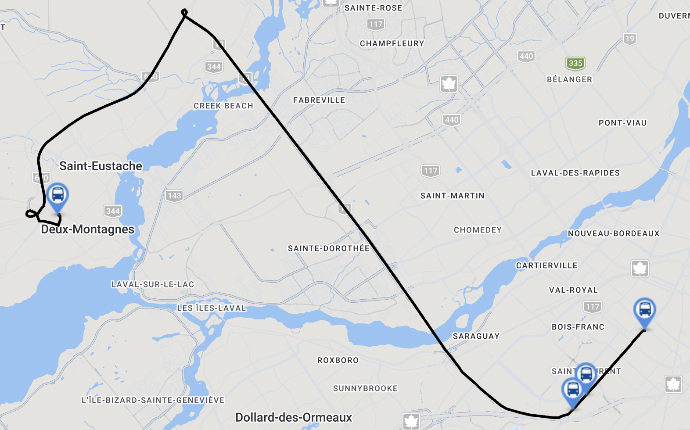

Il est suggéré ici d'ajouter un arrêt à la Place Vertu sur les lignes express 468 et 470.
Premièrement, l'ouverture de l'antenne Anse-à-l'Orme du REM permet de rejoindre le centre-ville de Montréal à partir de Pierrefonds et de Fairview. Les lignes 468 et 470 seront alors principalement utilisées par la clientèle ayant destination aux alentours de la station Côte-Vertu. Un arrêt supplémentaire à la Place Vertu facilite la correspondance vers les lignes industrielles (par exemple 174, 177, 196, 225) ainsi que des l'accès à plusieurs commerces et industries.
Deuxièmement, l'ajout d'un arrêt sur ces express permet de combler le retrait de la ligne 177 sur Côte-Vertu, surtout en soirée et en fin de semaine.
Enfin, la ligne 499 d'exo, bien qu'une navette de mitigation REM, possède deux arrêts à l'intersections Beaulac et Bégin. L'ARTM affirme que ces deux arrêts sont justifiés par une utilisation substantielle observée, montrant un potentiel d'utilisation à cet endroit.
